Tabletop Battles Reviews: Codex Adeptus Custodes 11th Edition
Suffice it to say, that while I was generally very happy with the last book, most Custodes players did not appear to enjoy their tenth edition release, with many players suggesting it was “not great,” “lacked panache,” or maybe was even “kind of bad.” And while I still don’t see what all the fuss was about - Games Workshop did eventually drop the point costs on most of those units and released a playable Detachment for the faction around Grotmas - it seems like players wanted more this time around. So I sat down with the new book and some fellow Tabletop Battles authors to review the new rules and figure out just how mad the Custodes-playing public should be about these new rules.
Before we dive in, we’d like to extend a thanks to Games Workshop for providing us with a review copy of this codex and a provisional version of the Munitorum Field Manual. Any rules or points costs we reference are subject to change until they are published on the Warhammer 40K App.Codex Overview
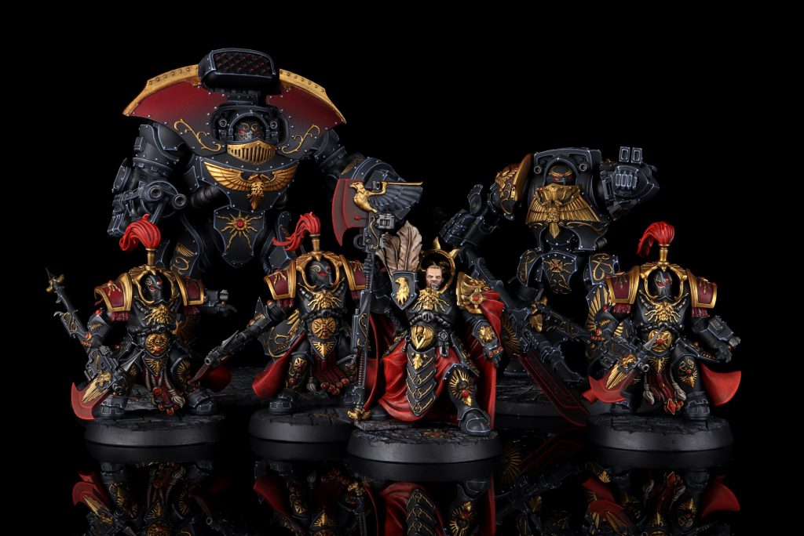
Pendulin's CustodesTheChirurgeon: One of the ongoing challenges of Warhammer 40,000 is balancing an army like the Adeptus Custodes. They’re supposed to be elite even among elite, something like a Space Marine even to Space Marines, and that hasn’t necessarily been reflected on the tabletop, where they tend to feel more like “Faster Terminators” at times. The solution of dropping their point costs also doesn’t feel amazing, as it meant we’d see things like “hordes” of Custodian Guard or armies running 18 Allarus and a ton of Sisters of Silence. And while those armies were certainly good in their respective heydays, they also didn’t quite fit the lore idea that “three Custodians can conquer an entire world.”
That philosophy seems to be at the heart of the new book - or at least its datasheets. These Custodians feel like literal walking tanks, to the point that I’d compare them to an army of War Dogs or Armigers rather than a force of Terminators. And the new range is a big help here, giving the Custodes a more clear visual and model identity that has multiple types of bike, tank, dreadnought, and infantry that is fully divorced from both the Space Marines range (no more Land Raiders) and Forge World. Everything here is bigger and beefier, with datasheets that boast eye-watering statlines.
Martial Ka’tahs have been reworked here, giving you more options than before, and letting you choose per unit. It’s basically like orders for the Astra Militarum, only not attached to units that are terrible and with no restriction around becoming battle-shocked. If there’s a downside to this it’s that you can have different Ka’tahs available for each unit in your army and with a mix of offensive and defensive buffs, which will mean having to think more about your choices and track what’s active on each unit in your army. It will be much more possible to make the wrong choice or just forget what you had going on.
On top of that, your days of making do with a panoply of piss-poor Detachments are largely over. Following the trend of new Codexes prioritizing 1 DP Detachments, this book has thirteen options to choose from, with only a single Detachment of the set being 3 DP. And frankly, the options here are stupidly good, with the kinds of rule buffs that make them worth taking before you even consider the Stratagems they have on offer. Some Detachments also have favored Ka’tahs, giving you an extra bonus when your units have those active on your units.
The Adeptus Custodes are an army which finally feels like a super-elite army in Warhammer 40k, living somewhere in the space between “thirty terminator lists” and “fourteen war dogs,” though we hope they feel more like the latter than the former. There are some incredibly strong datasheets and rules here and every time one of our reviewers read the book they’d cycle through some sequence of “oh,” and “oh my god,” and “oh what the hell,” then “oh this is all bullshit,” before finally sighing and landing on “ok well let’s see what the points look like.”
Falcon: As a full-fledged mouth-breathing fan of Custodes since their inception at the end of 7th edition this book really has me excited. In previous reviews of these Codexes, going all the way back to 8th, I have brought up just how difficult it is to give this faction a heroic feel without making them broken. In 8th and 9th it felt like things were almost there but it was always missing something (in 8th the range just wasn’t there to make it feel like an army, while in 9th the book came out about a hair below totally busted, and only theChirurgeon talks about 10th because he is like some kind of sea hag that gets more powerful by bringing up our shame). This Codex though, it has it all and at first blush it feels just right. Each model is about the equivalent of a Space Marine captain and seems to be priced accordingly, and the feel on the table is great. I’d argue there are very few losers here and a myriad of ways to build out your lists without feeling bad about what you’re giving up to do it. There are very legitimate reasons for highlander style lists which I find very appealing.TheChirurgeon: Quiet, you. Get back in your box. The crummy one with “the Old World” painted on the side of it. I’ll be over here, feeding on your shame to grow more powerful.
Falcon: Unfortunately for both of us my shame is endless.Standout Features
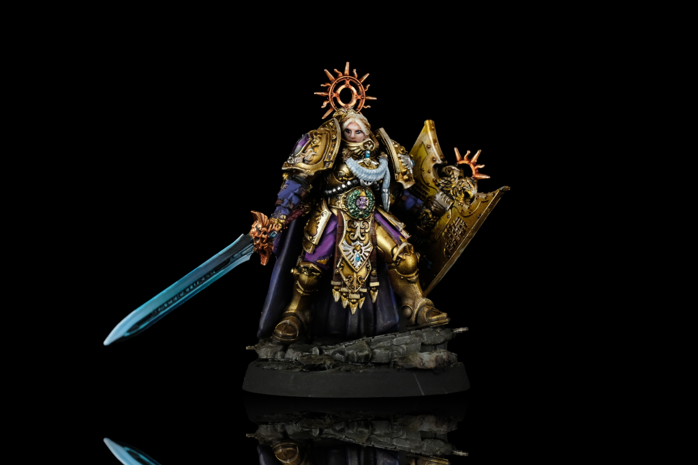
Shield Captain - Credit: keewaTheChirurgeon: This book firmly re-grounds Custodes as a super-elite army in Warhammer 40,000. These aren’t just Terminators with more accurate shooting and worse melee; the basic Custodians of this book make Space Marine captains and Chaos Lords look soft. If you wanted Custodes which were more lore accurate (but still actually able to die on the table because this is still a game you have to play against people and not your personal fanfiction larping device), this book is designed for you.
The Good
- Statlines. Everything in this book has had its statlines beefed up. Did you seethe with rage when you heard that basic ass Space Marines were going to S5 and T5? Well good news - you’re going to T7 and your spears are going to S8. Your axes? Those go to S10. And even the softest Custodian in your army - the flying Ventari - have five wounds per model, putting them above Space Marine Captains when it comes to their statlines. Also they’re faster now, with base 8” movement (Falcon: Even the tortoise-like Allarus is move 7!). Your basic Warden is going to be laughing at a Terminator Captain, saying “see what they need to do to mimic even a fraction of our power?”
- Ka’tahs. Ka’tahs are substantially stronger and more versatile than before. No more picking Sustained vs. Lethal; now you can do actions while shooting/in combat/battleshocked, ignore modifiers, give enemy units -1 to hit in melee, and so on. And you can wait to choose when those effects go off, giving you flexibility throughout a round to activate abilities when you need.
- Detachments. The Detachments in last edition’s Codex were bad. The ones in this book are not. If you still want sustained/lethal hits, you can get them from the Guardians of the Throne Detachment, but otherwise you have a host of 1 DP options that give you some very powerful effects, and many can super-charge your Ka’tahs.
The Bad
- Unit sizes. Excluding Sisters of Silence and any attached characters, the biggest unit in this army will be 3 models, and the most you’ll run of anything is 9. This is awkward because some units are still sold in numbers that don’t align with this (e.g. Wardens) and others are sold in multiples of 3 but things like Vexillas are 1 per box. If you recently built and painted 18 Allarus Terminators, congratulations, you have 9 more of those than you’ll ever need, unless you for some reason went 50:50 on which melee weapon you equipped them with. It’s the right choice for what this book is doing, and allows them to make each individual Custodian very strong, but it creates some perverse outcomes.
- Power. There is a lot of strong stuff in this book. The ka’tahs are mega-flexible and get even stronger with the Shield Host buffs, and you have a lot of ways to use multiple of them in a round on a single unit. Some effects like the reduction to pile-in/consolidation moves and the ability to choose whatever consolidation mode you like are potentially very strong in ways that won’t be a lot of fun for an opponent to deal with.
- Tracking. The downside to new Ka’tahs is that you essentially have to track the Ka’tah state for each unit in your army at all times. That’s not terrible for an army running a small number of units, but even across 10-12 it can be a lot to keep track of and manage mentally. And while those Ka’tahs are much more flexible, they also allow for more mistakes - you can absolutely mess up and either forget to use them now or use the wrong one in a turn. “Oh I meant to use this Ka’tah” was fine when it was just a combat ability - it’s not going to play as well when you forget to use Kaptaris for -1 to be hit while Rendax is still available, or vice versa.
- Sisters Support. There was a lot of design space here, especially with the advent of psyker levels, to give Sisters some unique rules and abilities. Instead they are relegated to the pit of action farming and the occasional clutch FnP bubble they always have been.
Army Rules
One thing to be aware of right up front - Sisters of Silence no longer have the Adeptus Custodes faction keyword, instead being Anathema Psykana, so they only benefit from abilities that specifically refer to them, not anything that talks about Adeptus Custodes.
Martial Ka’tah
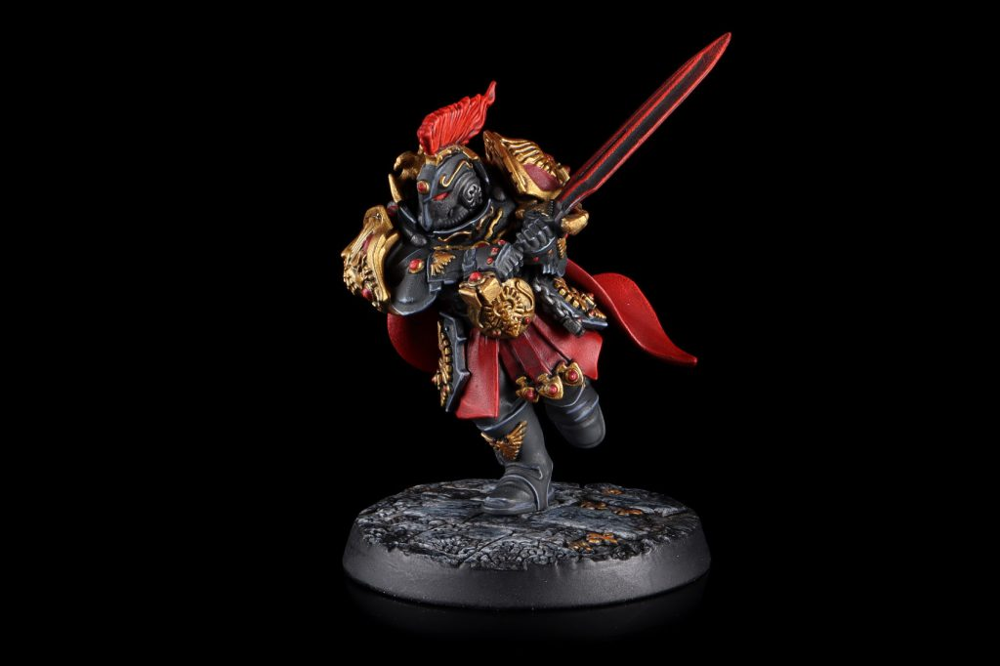
Blade Champion. Credit: PendulinTheChirurgeon: Ka’tahs are back! But they are much, much better now. At the start of your Command phase, all of your Custodes units with this ability become readied. While a unit is readied, it can use a Ka’tah. After it does, that ability becomes active, and they stop being readied. There are six effects to choose from, and each has a different use.
- Conservai: Activates in the Command phase. Until the end of the turn, your unit can start actions while engaged or battle-shocked, and if you start an action you’re still eligible to shoot.
- Calistus: Activates in your Movement phase. Lets you move through all types of model when making a normal, advance, or fall-back move.
- Salvus: Activates in your Shooting phase. Your unit can ignore modifiers to BS, hit rolls, and wound rolls.
- Dacatarai: Activates at the start of the Fight phase. Gives your unit the ability to re-roll hit rolls of 1 against non-VEHICLE/MONSTER units.
- Kaptaris: Activates at the start of the Fight phase. Attacks against your unit are -1 to hit.
- Rendax: Used in the Fight phase. Your unit gains LETHAL HITS: MONSTER/VEHICLE.
Note that this means that for each unit you’ll need to track whether that unit is readied, and which Ka’tah it’s using, as different units can use different Ka’tahs. Note as well that the unique Shield Host Detachments each have a Favored Ka’tah, which gives your units an extra bonus when you’re in that chosen Ka’tah.
In addition, the signature ability of Shield Captains is that they can ready their unit once per battle round, meaning you can use multiple abilities in one turn, or perhaps deploy Kaptaris in both turns if your opponent is on the front foot in melee. In the unlikely event that your foes think it’s a good idea to first turn charge Custodes, I guess it can be relevant there too.
The other thing to note - as we mentioned in our “The Bad” section is that it’s now both possible and easy to either forget or mis-use Ka’tahs. Having six different effects which can be used in four different phases means you can miss a key trigger or just make the wrong choice when it comes to picking the one you want to use. That wasn’t so much a fear when the options were “lethal or sustained hits in the fight phase” but can absolutely happen now that you have three different fight phase abilities and one has to be used at the start of the phase. The new Ka’tahs reward more intentional play.
Wings: The new Ka’tahs are really cool, and while I share Rob’s dislike of the tracking, you’re not going to have so many units on the table that it’s impossible to manage. I think the most important of these are probably the melee ones, particularly Dacatarai and Rendax. Because you have so few models, you really need to be able to kill anything, and these really help smooth that out.Falcon: So far in my brief experience tracking hasn’t been too bad as you’re generally only running a small number of units that can do it to begin with. Remembering the weird names that all sound the same is much more difficult.
Aegis of the Emperor
TheChirurgeon: Custodes units with this ability get a Feel No Pain 5+ against mortal wounds. Custodes players who had been missing this one finally get it back, ensuring that they don’t just fold to things like “psychic powers,” “grenades,” or “being next to an exploding vehicle.”. It also stops the army being quite as vulnerable to Devastating Wounds, though it’s still not their favourite thing to face.Aquila Commander
TheChirurgeon: At the start of the Battle Round, if a model with this ability is your Warlord, you gain 1 CP. They seem to be putting this in every army, which I don’t love - the ability itself is fine, but rolling out in each codex seems like a weird way to make every codex army slightly better than every army without a book. Note that the Blade Champion and Knight Centura do not have this ability.Falcon: Agreed on how this ability seems to be being rolled out. We just had a balance pass that could have easily slipped it into all those factions with long waits ahead. For Custodes, this is a godsend - the stratagem line-up is phenomenal.
Daughters of the Abyss
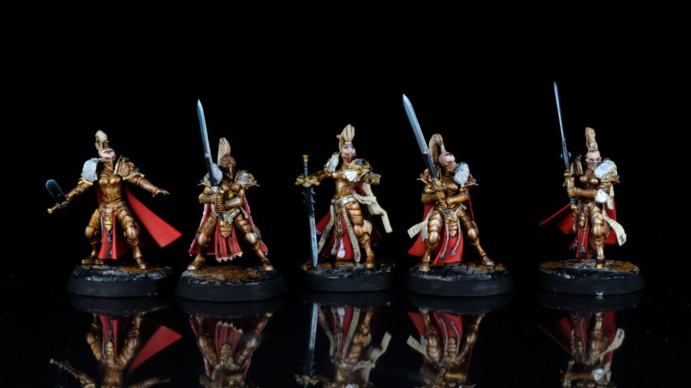
Sisters of Silence - Credit: KeewaHere’s your rule set for the Sisters of Silence. There are two parts to this rule:
- Units with this ability have a Feel No Pain 3+ against psychic attacks.
- Units with this ability have an aura that gives friendly Custodes units within 6” a Feel No Pain 5+ against psychic attacks.
Notably, Sisters do not get a Feel No Pain 5+ against regular mortal wounds, only Psychic Attacks, and they also project a FNP 5+ aura to nearby units
Special Move Types
The rule for making a Shock Disembark also appears in this Codex, because surprise! The Anathema Psykana Rhino allows its embarked unit to make a Shock Disembark move after it Advances. This means that if you fill it with Witchseekers, they can scout forward 7”, Advance 12+D6”, then get out 3” and still shoot. That gives Witchseekers an effective range of 40” or so with their flamers out of their deployment zone on the first turn which is uh, certainly something.
Detachments
The Custodes codex features 13 Detachments, 12 of which are a single DP and they run a gamut of specializations. It is important to note that 6 of these Detachments have the Shield Host keyword which cannot be duplicated within your lists. The Detachments are:
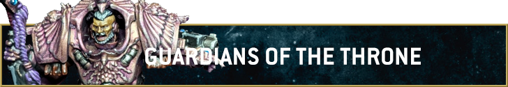
This is the all-rounder 3 DP Detachment, providing a slew of generically good stratagems and enhancements to keep your toolbox varied without being reliant on any specific unit combinations.
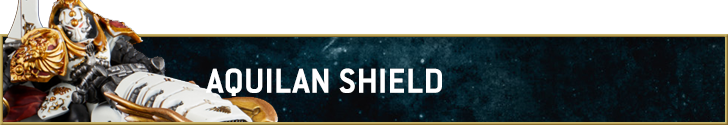
A Shield Host Detachment devoted to ranged combat, it boosts your defenses against ranged attacks while empowering your return fire.
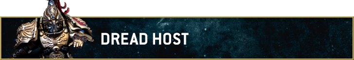
Reroll charges and bring the fight to your enemy in a combat focused shield host with a couple of tricks to lock down your opponent.
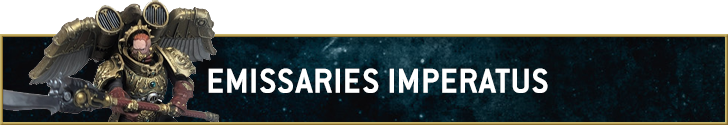
The Heralds of the Emperor get a Detachment that emphasizes Fights First mechanics with a unique stratagem suite.
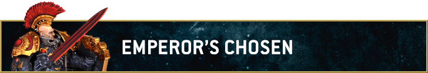
A Detachment meant to reflect temporary shield hosts created in times of need with a handful of powerful stratagems and built-in rerolls.
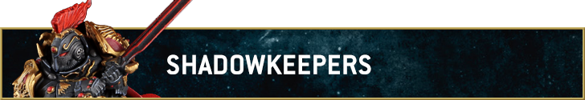
The Wardens of the Dark Cells get a Detachment with a focus on holding objectives against big gribblies with a touch of battle-shock for flavour.
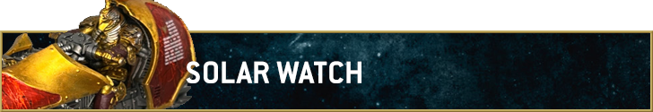
The speedy Detachment, this Shield Host gets a solid boost to speed and stratagems focused on movement, both yours and your opponents’.
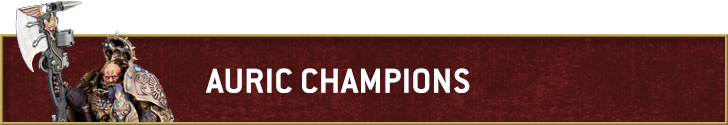
A Detachment focused on buffing and supporting your expensive Character units.
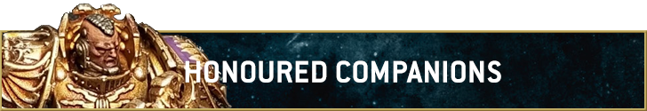
Get the most out of your battleline units with this army focused solely on making your Wardens and Custodian Guard the best they can be.
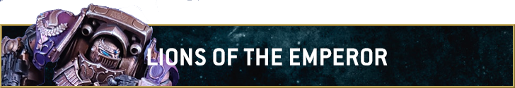
Teleportation and charge shenanigans aplenty in a Detachment devoted to the Terminators in all of us.
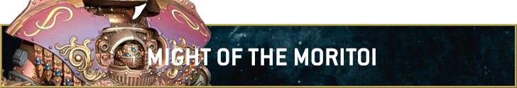
A favorite army returns with this Dreadnought-focused set up, turning your immovable Walkers into unstoppable ones.
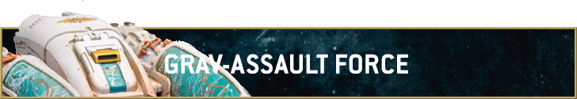
Do you like tanks? Make them gooder.
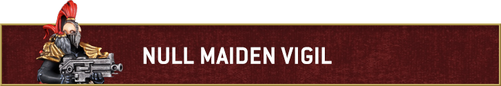
The requisite Detachment to try to get a little more juice out of your Sisters of Silence models.
Datasheets
Let’s start by talking about what’s not here. Valerian and Aleya go missing - much like Uriel Ventris over in Space Marines, we assume that the Black Library-based characters are on the way off to Legends. The Venerable Land Raider and Venerable Contemptor Dreadnought also depart. On the positive side, all of the Horus Heresy units recently brought into plastic are in this book - no messing about with Imperial Armour required. The only things not appearing here are the planes, which notably didn’t get a plastic release either and are possibly out for good.
Also - all non-Dreadnought Adeptus Custodes units in this book have Deep Strike (including the hover tanks). We’re not going to mention it every time, but they do. Baseline movement for the army is also now 8” (or 7” for Terminators), so they can really zip around the board.
Characters
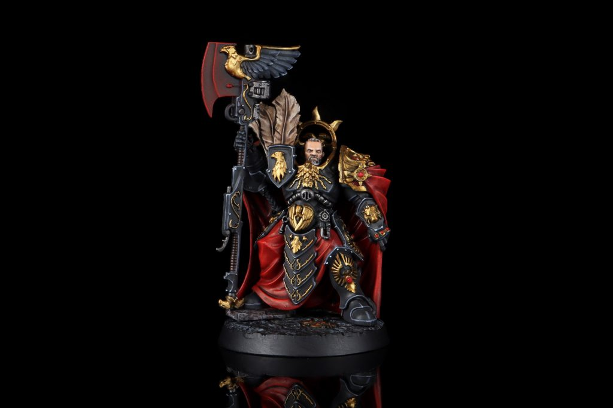
Trajann Valoris. Credit: PendulinTrajann Valoris is now the only Epic Hero in this Codex. He really is epic, too; in line with all the other non-Terminator infantry, he jumps to M8” and T7, and goes up from his current W7 to W10. He keeps his 5+ Feel No Pain, too. His Captain-General ability is now an aura which gives other Custodes units within 6” - except MONSTER/VEHICLE ones - re-rolls of 1 to hit and wound. His shooting drops from damage 3 to damage 2, but gets RAPID FIRE 2 and an extra point of Strength, so likely balances out at least a bit. The Watcher’s Axe gains CLEAVE 1 and goes up to S12, AP-3, and D4, which is incredibly hefty. There’s pretty much nothing he can’t have a good crack at killing. He also maintains his once per battle Moment Shackle ability though it only boosts his invuln save to a 3+ instead of 2+ now or bumps his attacks to 9 instead of 12. You pay for him - he weighs in at 265pts - but he’s the most vicious infantry Character in the game and it’s not especially close. He can also lead all non-Venatari Infantry in the book, including the Terminators, the latter of which is pretty neat.
The Shield-Captain gets the same statline boosts, and goes from W6 to W8. All three Shield-Captain datasheets get the Master of Ka’tahs ability, which is once per battle round per unit so you can do it multiple times with multiple Shield-Captains. This lets you make a unit readied, i.e. you get to pick another of your ka’tahs for them. The foot version also gets Vengeful Surge, a once per battle ability which allows them to make a surge move of D6+2” if their unit loses a wound to an enemy shooting attack.
Weapons-wise, you start with a pyrithite spear and a praesidium shield (a meltagun that also has 8 attacks at S8 AP-2 D2 in combat with CLEAVE 1 to boot, plus -1D). You can swap the spear for an eternity-pattern paragon blade (only 6 attacks, but at S10 AP-3 D3 with PRECISION) or swap both things for either a castellan axe or guardian spear. The axe has a hefty damage 4, but only 5 attacks and AP-2, while the guardian spear has CLEAVE 1 with 8 attacks at S8 AP-2 D2. Critically, the Praesidium Shield gives the captain -1D, which makes them an absolute walking fortress second only to Trajann, and although there’s a cost of 25pts attached to it (for a total of 205), you almost certainly want one of the options with that (and probably the sword because it whips).
The Shield-Captain in Allarus Terminator Armour (say that three times fast) gets either the axe or spear with the same statline, plus the ballistus grenade launcher which gets an overall buff - it’s 3 shots now with BLAST 1, but also gets ASSAULT and goes up to S5. Along with Master of the Ka’tahs, he gets an Archeotech Teleport-shunter, a once per game uppy-downy which happens in your Movement phase and requires you to ingress this phase - so you can use it turn 1 to bounce around the table, but there’s no way to e.g. hold the unit and Rapid Ingress later. Notably, he also goes up to T8 and W9, plus going up to M7”. The Allarus Captain can also swap to a castellan axe, which only gets 5A, (and no cleave) but hits at S10 D4. This is cool, but doesn’t quite hit a breakpoint where it seems significantly better than the spear, as S10 doesn’t hit the breakpoint for the toughest vehicles, and it doesn't come with AP-3 or Precision like the sword on the regular one does.
The Shield-Captain on Dawneagle Jetbike is also T8 and goes up to W10, but is not a Leader in the codex. The MFM indicates that they can lead Agamatus (the old name for Gyrfalcons) or Dawneagles so this is probably just a missing ability, and we assume he can lead the new bikes. He’s as tough as many vehicles and hits hard too, with his interceptor lance going up to 8 attacks at S8 AP-2 D2. The hurricane bolter is much as it was except for a bump to S5, but the salvo launcher goes up to 2 attacks and D3+2 damage - though it loses TWIN-LINKED and is only AP-2. His Sweeping Advance rule is much the same as it is now, making him a nightmare to pin down.
Stepping away from Shield-Captains, the Blade Champion gets a bump to W7 and also Ld5+, which is nice. His vaultswords get a whole raft of changes - the Behemor profile goes down to 5 attacks and loses PRECISION, but gains DEVASTATING WOUNDS and jumps to S10 AP-3 D3. Meanwhile, the Hurricanis is up to 10 attacks and gains CLEAVE 1 on top of SUSTAINED HITS 1, and jumps to S6 AP-2 as well. Finally, the Victus profile gets PRECISION, and jumps to 8 attacks at S8 AP-3, but goes down to D2 from D3. This guy is going to do some real violence to anything he hits, and of course if you really want to drop devastating wounds on something with Behemor you can always use Epic Challenge on him. He keeps his Swift Onslaught rule and adds re-roll advance rolls to the re-roll to charge rolls, and while he can no longer advance and charge once per game, he gets Sword of the Throne instead. This lets him pick a unit to be his mark at the start of the game, which gives him +1 to wound rolls against that unit; when the mark is destroyed he gets to pick another.
With Aleya gone, the only Sisters of Silence character is the Knight-Centura. She goes up to M7” as do other Sisters. She also gets Scouts 7” to match. Seeker’s Instincts is slightly changed, still giving the +2” M but now becoming re-rolls to advance and charge rolls instead of +2. Corner the Quarry is unchanged. Weapons-wise, her bolter goes up to S5 and AP-1 as well as gaining an attack, while also becoming ASSAULT and ANTI-PSYKER 4+; the flamer gets ANTI-PSYKER and ASSAULT as well and becomes BLAST 2 with 4 attacks, and gains a point of AP. Meanwhile in melee she’s swinging her executioner greatblade an extra time and gets CLEAVE 1, though the DEVASTATING WOUNDS now only triggers against PSYKER. Interestingly she also becomes Support, so you can’t run her solo, but can attach them in support of an Inquisitor if you’re in the Null-maiden Vigil Detachment. Whether you want any of that action is a different question, but it’s doable.
Infantry
Custodians
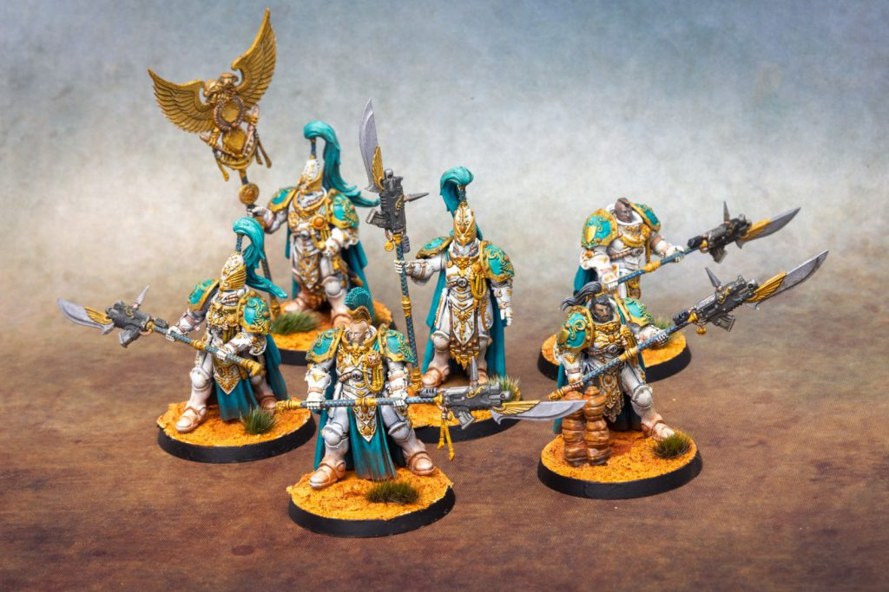
Custodian Guard. Credit - SoggyThe Custodian Guard now mirror the Heresy typing, splitting up into the Sentinel Guard Sodality and the Custodian Guard Sodality. The former is the sword and shield guys, the latter the guardian spear ones. Interestingly both units have a fixed size of 3 - no more, no less. The new box is a set of 6, so you get two units in each one - though only one vexilla. That matters more now as the vexilla doesn’t replace the weapons, so you pretty much always want one as they give +1 OC and ignore modifiers to Ld. This is true for all the Infantry units except Aquilons, so get to waving your flag.
The sentinel blade gets a serious buff, jumping to 4 attacks in shooting with S5, and getting damage 2 in melee. Meanwhile, the praesidium shields mean that the unit has -1 to wound rolls if S is higher than their T - though remember that they’re buffed to T7 now, so that’s fewer weapons than it used to be! As well as that toughness boost, both units go up to W5, plus Ld5+ and OC3 - effectively OC4, since you’ll always run a vexilla. These are seriously hard nuts to crack now, which explains why you’re only allowed to run 3 of them in one squad.
The Sentinel Guard get Stand Vigil, giving them LETHAL HITS against non-MONSTER/VEHICLE units if either they are on an objective, or the target is. Meanwhile the Custodian Guard get Impenetrable Defence, which is SUSTAINED HITS 1 against non-MONSTER/VEHICLE with the same conditions. Guardian spears get the same strength boost as sentinel blades do in shooting, while also going up to 6 attacks each and S8 in melee. Both regular Guard flavours rock in at 240pts for three models.
The big brother Custodian Wardens go up to W6 each, and have the same castellan axe and guardian spear options as mentioned previously with either 3 or 6 attacks respectively. Their Living Fortress rule is an always-on -1AP, fantastic on a tough unit with a 2+ save. These guys end up in a slightly awkward place as their unit size is 2-3, presumably to account for the fact you can build a Shield-Captain out of their box. They’re sold in 5s, so that sort of works, but it’s a bit awkward. You also pay for what you’re getting here, starting at 200pts for 2, or 295pts for the full three.
All three of these have the TRUSTED SENTINEL keyword, which interacts with some Detachment rules.
Terminators
 Allarus Custodes from the Solar Watch Shield Host painted by Crab-stuffed Mushrooms
Allarus Custodes from the Solar Watch Shield Host painted by Crab-stuffed Mushrooms
There’s three kinds of Terminator here now. Firstly the classic Allarus Custodians, whose Slayer of Tyrants rule now gives them +1 to wound against anything they target in melee which has a higher Toughness than their own chunky T8. These again come in units of 2-3 - sorry to anyone who bought 18 of these recently. Like Wardens, they’re 6 Wounds apiece too, and have T8 like all the Terminators in this book. Notably two Allarus is your cheapest multi-model Infantry unit at 180pts, which is pretty important for list building.
Aquilon Terminators get split up into a version with solarite power gauntlets and another with solarite power talons. The power gauntlet version only gets adrathic combi-destructors to shoot - which go up to two attacks each, but lose 6” of range and drop to S5 and lose TWIN-LINKED. You’re probably more excited by the power gauntlet though, which goes up to S10 and D3. It’s only AP-2, but their Dread Foe rule gives them +1 AP against non-MONSTER/VEHICLE units to help deal with that.Meanwhile, the power talon version can either take firepikes (again dropped to S5, with the new style of flamer rule that gives them only 3 attacks, but BLAST 2) or lastrum storm bolters which get an extra attack each plus go up to RAPID FIRE 3. The power talons are a bit weird - they go down to 6 attacks and drop to S6, but get SUSTAINED HITS 2, so they can really pop off but only really threaten Ork Boyz and other similar lightly-armoured targets. They do get some help from their Reap a Terrible Tally rule, which gives them re-rolls of 1 to hit and wound against INFANTRY units. These guys seem like they’ll be terrific at killing light infantry, and with the smaller units available to you in this book you may well find that they have a role to play in being able to just pick something that tries to make quantity into quality and rinsing it off the table. Both Aquilon units come in fixed sizes of 3, costing you 285 for gauntlets or 275 for talons.
Venatari
 Venatarii with Verutum Lances. Credit: NotThatHenryC
Venatarii with Verutum Lances. Credit: NotThatHenryC
Venatari get split up into two separate datasheets this time. Both of them have Take Wing, i.e. uppy-downy, a rule you’ll never be sad to have available somewhere. They also each have a Neutronium Cascade Mine, a once per game ability to do D3 mortal wounds to an enemy unit on a 2+ at the start of any phase, or 2D3 if that unit is a MONSTER or VEHICLE.
The version with kinetic destroyers gets Strike from the Skies, which lets you re-roll hit rolls if you made an ingress move this turn. The datasheet here is kind of mediocre - the kinetic destroyers have 18” range now and pump out twice as many shots, but that’s about it. They do at least get a melee profile from the tarsus buckler with 5 attacks each at S6 AP-2 D1 and SUSTAINED HITS 1, but that isn’t really much to write home about, especially when your other option is the unit with verutum lances.
Wings: This unit is a baffling outlier, and might be the only outright bad datasheet in the book. It feels like they’re missing some kind of defensive buff from the buckler. At 255pts they’re only 15pts less than their better cousins, and I can’t see ever taking these.On the Veratum datasheet you get Swift Ruin, which is their existing datasheet rule of a -1CP use of Rapid Ingress. This is particularly good given their ability to return to reserves, but has a safety valve against spamming that only one unit per army can do it per turn. Their ranged profile gets a huge jump, dropping down to 18” range and only 1 attack but going up to S10 AP-2 D3. In melee, they hit no harder, but keep LANCE and also get PRECISION, allowing them to absolutely murder characters. These rock in at 270pts, and one unit seems extremely worth it.
Both units also have the explosives keyword and are the only ones to gain it in the Custodes codex if you’re looking for more ways to distribute mortals in this messy world.
Sisters of Silence
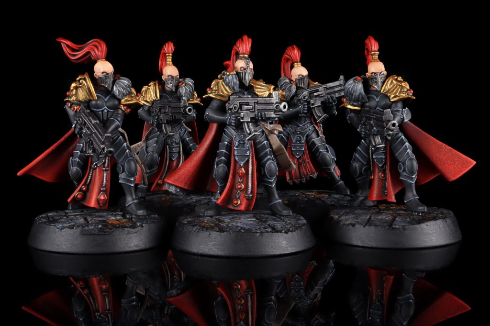
Sisters of Silence: Prosecutors - Credit: PendulinThe Prosecutor Squad gets both ANTI-PSYKER 4+ and ASSAULT on its boltguns, and go up to S5 AP-1 to boot. Their datasheet rule is Purity of Execution, which lets you pick a visible enemy unit within 18” and give it +3” to detection range. Long-ranged shooting isn’[t generally this army’s vibe, but no harm in having it. Prosecutors are also the absolute cheapest thing you can put on the table at 45pts for four models.
Vigilators get an extra attack on their executioner greatblades, and the same change as the Knight-Centura to only get dev wounds into psykers. They retain their Deft Parry rule, giving them -1 to hit in combat. 100pts for 10 isn’t horrible as a possible trade piece, as they do have the numbers to punch up a fair bit.Like the Knight-Centura, Witchseekers go up to Scouts 7” to align them with their increased movement characteristic, and get a similar adjustment to their flamer profile - though they’re only 3 attacks and BLAST 1. Sanctified Flames still forces a battle-shock roll, but also gives it -1 if the enemy unit has PSYKER. You get four of these at 55pts, which certainly isn’t bad, and 10 in a Rhino at 180pts all-in isn’t horrible, but suffers from the terrible problem as being the same price as two Allarus, which is the kiss of death for any non-Custodian option in this book.
Mounted
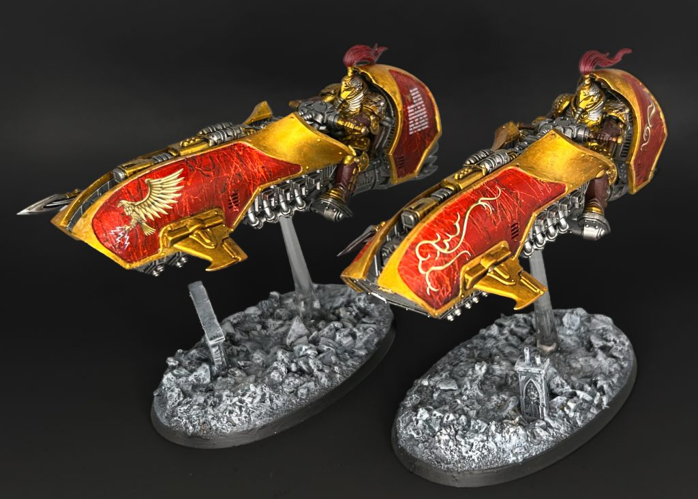
Custodes Gyrfalcon Jetbike Sodality. Credit: NotThatHenryCVertus Praetors are now basically light vehicles, moving up to T8 and W7. They have just one datasheet rule, Quicksilver Execution, but it’s a strong one, giving them SUSTAINED HITS 1 in melee if they made a charge move - which of course works if you use Heroic Intervention, making them really powerful on the counter-charge.
Hurricane bolters are unchanged except getting the expected bump to S5 ap-1, but the salvo launcher has some pretty meaty changes - it’s now 2 attacks with D3+2 damage, but only AP-2. The extra shot is a trade-off for TWIN-LINKED, lowering the floor for their output a bit but raising the ceiling. As before, they come in a unit size of 2-3.
The Gyrfalcon Jetbike Sodality brings the banana bikes into 40k, and with some spicy rules to boot. Like Vertus Praetors they’re T8, but apparently your bike being longer also makes it harder to kill as they get W9. Their Death Blow rule gives them +1AP on the charge, pushing their solarite power lances up to a meaty AP-3. They have one fewer attack than the Vertus Praetors, but get damage 3 in return, so they’ll still hit like trucks and be great for hunting things like Gravis Marines or Nobz.
Shooting-wise, they have a choice of four different weapons. Our highlights here are either the adrathic devastator, which pumps out 3 shots at S8 AP-2 D3 and will help focus them on that role of powering through 3 wound models, or the arachnus volley cannon which is only damage 1 but has 8 shots at S5 AP-1 D1 and both DEVASTATING WOUNDS and SUSTAINED HITS 1. The sheer volume of shots here is the main attraction - similarly to the talon versions of Aquilons, you may find that you’re struggling to get light infantry cleared out quickly enough, and these give you a way to do that. Your other options are the lastrum bolt cannon - S6 AP-2 D2 with SUSTAINED HITS 1, but only 3 shots, or the twin corvae las-pulser, TWIN-LINKED at S10 AP-3 D3+2 but with only 1 shot each. Gyrfalcons come in a fixed unit size of 2 - if you bought the recent Custodes Support Group box, congratulations, you already have 2/3rds of the models you’ll ever need for these, and if you painted them you are also over a quarter of a way to a tournament army because they’re 260pts per unit (280pts for unit 2+), and absolutely whip.
Wings: If I'm outright worried about anything in this book, it's something approximating 14 Jetbikes and a bike Captain (or more likely 13, a Captain, and some Sisters). It can put so much pressure and violence into the foe at such speed that it can be very, very hard to deal with. That's exacerbated by the fact that there's relatively few anti-mounted tools out there, and these dodge both specialist tank hunters and infantry-killing toys like Howling Banshees. It wouldn't shock me if these end up having to get the Wazdakka treatment, adding the VEHICLE keyword just so more tools can actually interact with them.Dreadnoughts
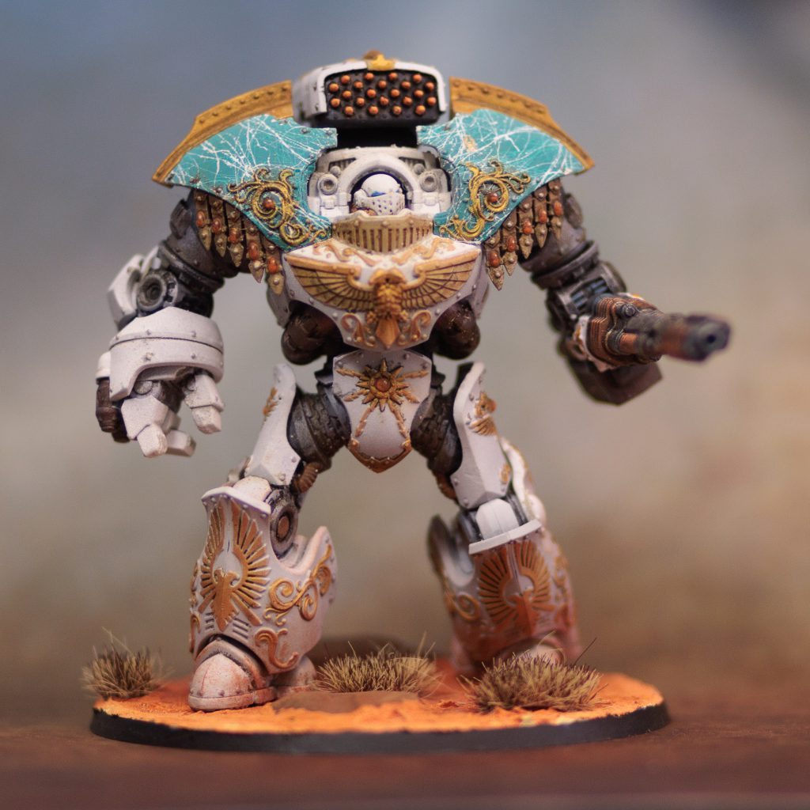
Telemon Heavy Dreadnought. Credit - SoggyWeighing in first is the Telemon Heavy Dreadnought, which gets even heavier with a jump to T11 and W14. They’ve also gotten faster, going up to M10”. Their datasheet rule is still Guardian Eternal, providing flat -1D, but it takes a slight nerf, now only working against ranged attacks.
You can now only run one gun and must take a caestus in the other hand, presumably because that’s how the plastic model works out. You can swap the gun for a second Caestus though, giving you an extra couple of attacks and TWIN-LINKED as well, adding up to a comical 7A at S14 AP-3 D4. Shooting-wise, the arachnus storm cannon is mostly unchanged as a high output chaff killer, but gains SUSTAINED HITS 1, while the iliastus accelerator culverin loses an attack but gains RAPID FIRE 3 and goes up to S10, so can throw down 6 damage three shots, which is awesome. You can also now take an adrathic desolator, with 4 shots at S10 AP-2 D4. Looks good to us. The spiculus bolt launcher gains a point of AP as well as BLAST 2, with 6 attacks on baseline, while the twin plasma projector is now a twin neutronium cascade projector, adding BLAST 1 to its existing rules (Torrent and Twin-linked) and a flat 3 shots. Your first Telemon is 280pts, which is honestly lower than we’d have guessed, so definitely worth a try as a centrepiece.
Both kinds of Contemptor jump to 9” Movement and T10, and gain a couple of wounds as well. They also have the Unyielding Ancient datasheet rule which makes them -1 to wound against S higher than T. The Contemptor-Galatus gets a big buff on its warblade’s shooting profile, moving up to damage 2, and gets 4 attacks + BLAST 2 with it. In melee, meanwhile, it jumps to S10 in melee, and gets both CLEAVE 1 and SUSTAINTED HITS 1 against non/MONSTER/VEHICLE. This makes it staggeringly brutal into elite infantry, carving out a real niche for itself. It’s also the cheapest of the three at 220pts
Meanwhile, the Contemptor-Achillus gains a point of AP on its Dreadspear, and also goes up to D3+3 damage. Its shooting profile goes up to S10, gains an attack, and gets D3+2 damage to boot. If that wasn’t enough, it still has its wrist guns. The infernus incinerator goes to 3 attacks with BLAST 2 and also gets TWIN-LINKED and 18” range. The adrathic destructor goes the other way, dropping to 12” range and losing TWIN-LINKED as well as going down to S5, but gains an attack. Finally the lastrum storm bolter is 3 attacks with RAPID FIRE 3 and otherwise unchanged. One notable difference on this datasheet is that you can no longer mix and match these - you’re taking 2 incinerators, 2 destructors, or 2 storm bolters. The flamer option seems especially strong here, as it presents an exceptionally nasty Overwatch threat into any sort of hordes, while still being able to rip a tank apart in melee. 230pts is an attractive price tag given that, though it does have a small downside of only packing a 5+ invulnerable save.
All three Dreadnoughts have taken some substantial buffs in this book, and look ready to beat some ass in the 41st millennium, especially with the Might of the Moritoi Detachment getting some great upgrades as well.
Vehicles
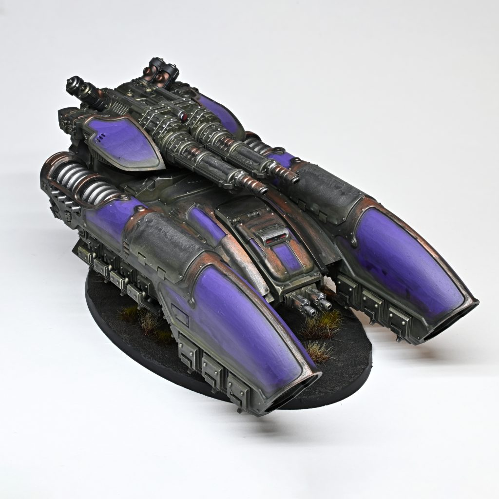
Caladius Annihilator Grav-tank. Credit: RockfishAs a balm to Rob’s soul, the tanks can no longer do karate.
Wings: This is the worst thing Games Workshop has ever done.The Pallas Grav-attack gets an extra point of Toughness and an extra Wound, presumably to stop it being equivalent to a Gyrfalcon Jetbike. Its new gun profiles are either a twin arachnus blaze cannon - now just 2 shots instead of its previous 8, but with S10 AP-3 D3+2 and TWIN-LINKED - or a twin iliastus accelerator fusil, which has 2 shots at S10 AP-1 D3 but also gets RAPID FIRE 2 and TWIN-LINKED. This is merely ok in terms of output compared to what else is in this codex, but its Mobile Hunter rule is pretty nifty, letting it move D6” after shooting (but not charge). The Pallas has the upside of being fairly cheap in a pricey book, running you 135pts, but you really need a bit more output than that to justify it.
Coronus Grav-carriers have long struggled to find a role in this army, but may benefit from Land Raiders being removed. You can use them to shock disembark, and they also get the Repulsor Suspensor Technology rule, which lets them make a D6” reactive move if they lose a wound to your opponent’s shooting. Weapons-wise, they came with a twin arachnus blaze cannon (see above) and either a twin lastrum bolt cannon (3 shots at S6 AP-2 D2 with SUSTAINED HITS 1 and TWIN-LINKED) or twin neutronium cascade projectors (3 shots at S7 AP-2 D1 with BLAST 1, TORRENT, and TWIN-LINKED). It still carries 8 INFANTRY, but can no longer carry JUMP PACK models. This is pretty tricky to evaluate, as it’s quite expensive at 225pts, but does a very solid job of delivering Custodes safely to battle, and that’s very scary for opponents to deal with. It also lets you stunt on the world by creating the most expensive clown car points can buy - by our maths, you can deploy a Coronus that uses 1315pts of your army (more with Enhancements).The Caladius Grav-tank is split into two, with one datasheet using its old name and another with “Annihilator” added in. Interestingly their profile doesn’t change at all (apart from the universal boost to Ld5+ and adding Deep Strike). This version has Destructor Optics, giving its ranged attacks +1 AP against things that aren’t MONSTER or VEHICLE. It runs an iliastus accelerator cannon (4 shots at S10 AP-1 D3 with RAPID FIRE 4 and SUSTAINED HITS 1 against non-MONSTER/VEHICLE) and either a twin lastrum bolt cannon or twin neutronium cascade projectors (see the Coronus above). This thing loves to rinse medium infantry off the table, but it suffers from being in an entire army that loves to do that, meaning you can probably do better for 230pts.
Its cousin the Caladius Annihilator Grav-tank is much more focused on killing big stuff. Its Advanced Firepower rule gives it one re-roll to each of hit, wound, and damage against a MONSTER or VEHICLE unit, and it swaps the iliastus accelerator cannon for an arachnus blaze cannonade - 4 shots at S12 AP-3 D6+2, with LETHAL HITS: MONSTER/VEHICLE to boot. Like the other tanks, its secondary weapon is either a twin lastrum bolt cannon or twin neutronium cascade projectors. This one costs 250pts, which is a lot, but it is the only true, genuine anti-tank gun this army can field, which means it’s worth being aware of.
All of the above, as you’d expect, have the GRAV-ASSAULT keyword to let them play with the Grav-assault Force Detachment.
Bringing up the rear is the Anathema Psykana Rhino, for ferrying your Sisters of Silence around. Its datasheet rule is now Assault Vehicle, letting you use the shock disembark move, and its storm bolter goes up to S5 AP-1 like other bolters.
How Will They Play?
Falcon: This army is extraordinarily fast no matter how you build it, has all the weapons to bully opponents for board control with relative ease and enough tricks that pinning units down can be difficult to accomplish. That said, even if you’re not rocking any of the big toys like the Calladius or Dreadnoughts you’re still only putting 12-15 golden armored bodies on the table and a handful of Sisters. A couple lucky melta shots and you’re down 200+ points in a hurry.For my first forays I’ve gone down the road of pure and simple power, forsaking most of the combat tricks available in the book for rerolls and rapid ingresses.
This list was a lot of fun to pilot. Between the Magna Imperator rule from Emperor’s Chosen and the reroll aura given by Trajann, you’ll often be turning every potential shot in your list into a wound when you plant yourself in the middle of the board with your Wardens and bikes. Your terminators do a lot of heavy lifting in MSU games by splitting with Unleash and then teleporting off the board only to immediately ingress somewhere else to pick off low value action jockeys like scouts, etc so you don’t have to waste your big resources on them and in big bash ‘em up games having a repeated rapid ingress option with Leonine Ferocity is great value.
In terms of adjustments you could make, if you are one of the souls that now own too many Allarus Terminators, you can pretty easily sub them in for the unit of Wardens and the Aquillons here and gain even more from the Lions Detachment. In particular, Trajann gaining +1 to wound against the biggest gribblies in the game on top of uppy-downy shenanigans feels really good on paper.
Wings: the sickness is in me. More on this in a moment, but I love this book, to the point where I’ve been inspired to write an army list even though Rob and Peter were leading on this one.
This book is designed to grind foes into dust, leveraging what may low-key turn out to be one of the most powerful rules in the book, which is the boosted version of Dacatarai in Dread Host. With the way combat works in 11th Edition, cutting foes down to only a 1” pile in does extreme damage to their ability to actually hit at full force, which is a problem when what they’re failing to do that against is Custodes.
The combination of Dread Host and Lions of the Emperor is also really strong - you can on-board teleport the Allarus Captain then use Fury of the Emperor for a 7” re-rollable charge. I’m a huge fan of the talon Aquilons, and think they might end up as one of the most important units in the book, and this combination really brings out the most in them. What’s even better is that unlike most lists I write for factions I don’t currently play, I’ll almost certainly be able to throw this down at some point, because existing Custodes players might have this going spare even after building their own list.
Final Thoughts
TheChirurgeon: Custodes players finally get the book they want, even if it’s not the one they deserve.On the whole, this is kind of disappointing to me, personally. This is a very strong book and lots of thought and care have gone into the notion of making the Adeptus Custodes feel like a truly super-elite faction on the tabletop. That’s disappointing not because I think the army being good is bad, but because positive reviews of things don’t get people riled up the same way that negative reviews do. People love to complain and they love a villain, even more than they love whatever faction they purportedly love to play. After all, if your faction is good, then when you lose it’s your fault.
Mostly I’m going to miss having Custodes players show up nine months after this book is released telling me they’re still upset about the review. That kind of cheap heat is hard to come by.
As a faction, this feels like a much better place for Custodes to end up - armies of 18 Allarus were an absolute slog to play against and having fewer, extremely beefy units feels much more like how a Custodes armies should look on the table than just being Marine Terminators++. Every Custodian feels like a Space Marine Captain and then some, and that’s really cool from a flavor standpoint, and it helps the faction feel legitimately different on the table. I think it’s tough to find the remaining ground between marines and war dogs in terms of unit counts and model toughness/output but GW seems to have done that with this book and I’m interested to see how they’ll play when the book hits the wild. The biggest question I have is how much the army will depend on Sisters of Silence and Imperial Agents to be viable. My personal opinion is that an army of only Custodes should be viable on its own.
All of this comes together to make a book that feels novel and interesting to build with. The units all have eye-popping stats, the Detachments look like a blast to play, and the points for the army feel about right. The new unit counts prevent individual units from feeling too insane and will make losing each model feel like a big deal. Which is a big win for the “I put name plates on every one of my bases” crowd. Your time has finally come, and I expect you to throw a tiny funeral each time one of your golden models dies.
So, after all that, how mad should you be about these new rules? If you’re a Custodes player, the answer is “not mad at all, this book slaps.” And if you are mad, well, maybe it’s time to consider a new hobby because you’re never going to get what you want out of this one.
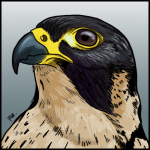
Falcon: Please be mad. It warms the gremlin that lives in my heart. This book is a massive jump and really makes Custodes feel like a real faction again. Wings: OK, cards on the table - Custodes have been my long-time nemesis, ruining my plans with their penchant for making 4+ invulnerable saves, and punching my units clean off the table. I swore I would never become one of them but...I love this book. It's so awesome. Easily my favourite out of the three we've seen so far for 11th Edition, and it's not particularly close. I am not alone in this feeling - I coordinate the delivery of our embargoed 40K reviews even when I'm not writing them myself, and the second this book arrived it became almost impossible to get our team to write about boring things like "Balance Updates" and "Space Marines", because the 10,000 were suddenly the only game in town. Yet another reason I should resent this book, but I simply can't.
This book takes a huge swing, completely resetting a faction's baseline statlines and capabilities, and pretty much nails it. Custodes feel gloriously potent and incredible on the table, but the points ensure that you're genuinely putting down a force of 15-20 indomitable champions against entire armies, and it works. What's more - I think it can only exist and work as it does because of how terrain, missions, and objectives have changed in 11th Edition. I do not think this book would work in 10th Edition, because the army would simply die, but in 11th, you can suddenly do an army like this and it's awesome. It's also pretty much immediately one of the best intro armies to get into the competitive game, because it's the cheapest and fastest to put on the tabletop by a lot. It's genuinely good for the scene for the barriers to entry to be lowered like this, even if it means I'm going to get punted by golden boots even more often.
To be clear, I'm not saying this book is perfect. There are a few internal balance issues with it - Emperor's Chosen outshines all the other Shield Hosts except maybe Solar Watch, and probably needs to go to 2DP at speed, basic infantry are maybe a touch too expensive (or, certainly too close in price to bikes and terminators), and max bikes could be a capital P-Problem. Rob is also probably correct that nailing the external balance on this consistently might be quite tricky, because the +/- one unit change is so massive.
None of that is enough to stop me being delighted with this book, and for what it's worth the initial prices mostly seem plausible. Even if they end up not being quite right, one of the things you're looking for in a codex is whether, on a foundational level, it has the juice, because as long as it does, you can make it work with points. The 10th Edition Custodes book was legendarily juiceless. This one is a glorious return to form.
Have any questions or feedback? Drop us a note in the comments below or email us at contact@tabletopbattles.com. Want articles like this linked in your inbox every Monday morning? Sign up for our newsletter. And don't forget that you can support us on Patreon for backer rewards like early video content, Administratum access, an ad-free experience on our website, and subscriber-only content covering competitive Warhammer 40K!Originally published on Goonhammer.


Leave a Comment